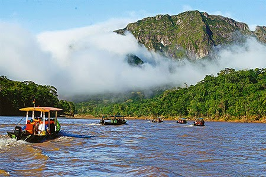

La superficie del Parque Madidi es de 1.895.740 hectáreas. El parque nacional conserva una de las regiones selváticas más importantes del mundo donde habitan 1.865 especies de plantas y 867 especies de aves, 156 especies de mamíferos, 84 especies de anfibios, 71 especies de reptiles y 192 especies de peces. Muchos científicos coinciden que dentro del parque hay muchas especies que todavía no fueron descubiertas. Ubicación El Parque Nacional Madidi se encuentra en las provincias Abel Iturralde y Franz Tamayo, al noroeste del Departamento de La Paz.
Como llegar al Parque Madidi
La forma más fácil de acceder al Parque Nacional Madidi es desde la ciudad de Rurrenabaque. Desde esta ciudad se llega navegando el río Beni y el río Tuíchi. Importante: Al parque no se puede llegar en transporte público por lo cual es necesario contratar una excursión. Dentro del parque funcionan algunos alojamientos y ecolodges que brindan excursiones de un día duración o estadías de varios días.
Excursiones en el Parque Nacional Madidi
Las diferentes agencias de viajes y ecolodge ofrecen diferentes opciones en excursiones y tours. Excursión de día completo Tour con ida y vuelta en el día desde Rurrenabaque, incluyen la navegación por el río ingresando al Madidi, almuerzo y caminata. Las ventajas de esta excursión son menor precio que dormir en el parque, ideal para aquellos que no tengan mucho tiempo. Los contras son que gran parte del tiempo de la excursión se utiliza para llegar y regresar desde el parque, por lo cual el tiempo a veces parece no ser suficiente. Excursiones de una o más noches Algunas excursiones ofrecen la posibilidad de pasar la noche en un ecolodge o alojamiento dentro del parque. Estas excursiones incluyen el alojamiento con las comidas. Al dormir dentro del parque es posible realizar más caminatas y llegar por el río a lugares más lejanos (aunque no siempre es garantía de ver más animales). También se organizan actividades nocturnas para observar la fauna que tiene su actividad por la noche. Recomendaciones para visitar el Parque Nacional Madidi